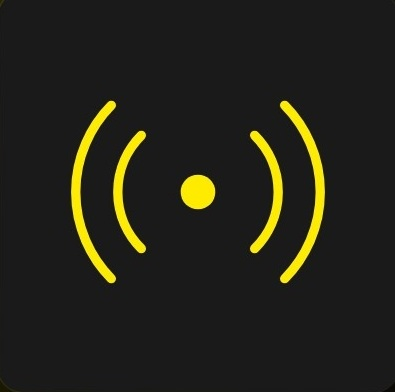

NORD
CENTRO SUD
💿 INFO BRANO
🎵 In attesa brano...
RADIO SISTEMA 3
ON AIR 24/7
♪ Ascolta in diretta

PREMI PLAY
100%
L R STEREOSTOP
♪ Brano in onda
CRONACA NAZIONALE
Carico...
SPORT CALCIO
Carico...
📱 SCANSIONA E ASCOLTA
Inquadra il codice con la fotocamera.
Si apre Radio Sistema 3, premi PLAY.